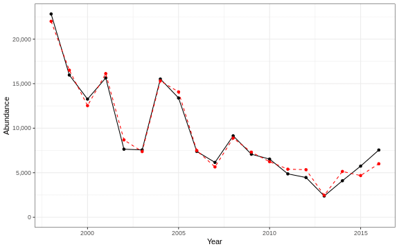

3.2 Recruitment
3.2.1 Generalized linear model
This is an exploratory fit of a poisson GLM. Initial covariates were included based on statistical significance at a Bonferroni-corrected alpha in the linear correlations shown in this report. Final covariates were chosen by forward stepwise AIC selection of additive GLMs.
| rnames | Estimate | Std. Error | z value | Pr(>|z|) |
|---|---|---|---|---|
| (Intercept) | 187 | 85.7 | 2.18 | 0.0293 |
| spring Winter flounder sne ma both gC m 2 d 1 |
1.3 | 0.257 | 5.05 | 4.49e-07 |
| Longitude degreesW | 9.44 | 3.6 | 2.62 | 0.00872 |
| WEEKLY PPD MEDIAN week 21 gCarbon m 2 Day |
-8.77 | 0.366 | -24 | 5.77e-127 |
| summer OI SST Anomaly Winter flounder gom both degreesC |
-1.27 | 0.0376 | -33.7 | 2.77e-249 |
| WEEKLY PPD MEDIAN week 26 gCarbon m 2 Day |
3.71 | 0.214 | 17.4 | 1.3e-67 |
| WEEKLY PPD MEDIAN week 22 gCarbon m 2 Day |
-10.3 | 0.392 | -26.3 | 7e-152 |
| Latitude degreesN | 15.3 | 5.5 | 2.77 | 0.00557 |
| southern latitude | 0.686 | 0.0224 | 30.7 | 1.5e-206 |
| WEEKLY PPD RATIO ANOMALY week 27 |
9.02 | 0.443 | 20.3 | 4.74e-92 |
| summer Winter flounder gb both gC m 2 d 1 |
-2.5 | 0.1 | -25 | 6.12e-138 |
| WEEKLY PPD RATIO ANOMALY week 22 |
12.4 | 0.42 | 29.4 | 1.95e-190 |
| WEEKLY PPD MEDIAN week 27 gCarbon m 2 Day |
-6.62 | 0.326 | -20.3 | 1.52e-91 |
| Abundance | -0.000145 | 7.24e-06 | -20 | 5.46e-89 |
| Warm Core Rings n | -0.143 | 0.00628 | -22.8 | 8.71e-115 |
| MONTHLY PPD MEDIAN month 05 gCarbon m 2 Day |
4.9 | 0.229 | 21.4 | 1.42e-101 |
| MONTHLY PPD MEDIAN month 06 gCarbon m 2 Day |
-3.97 | 0.29 | -13.7 | 1.39e-42 |
| recreational CPUE number of fish caught per day fished all species |
-0.425 | 0.0327 | -13 | 9.33e-39 |
| along shelf distance km |
-0.176 | 0.0641 | -2.74 | 0.00609 |
Dropped coefficients:
